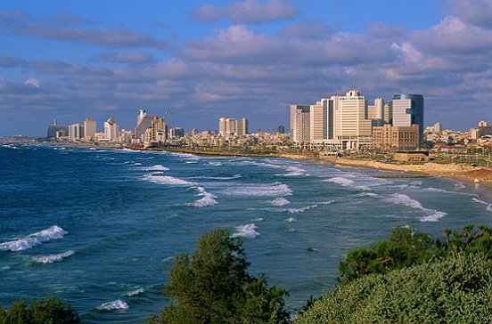

Significado de la Geografia
Concepto
Entendemos por Geografia a aquella ciencia que se interesa por el analisis de los fenomenos relacionados con la Tierra , tanto desde un punto de vista natural como humano. Es por esto que para la Geografia no solo es importante todo lo que tenga que ver con la superficie, los elementos naturales y territoriales, si no tambien con la poblacion que habita esos territorios y la adaptacion a diferentes tipos de espacios. Proveniente del griego, la palabra Geografia significa "descripcion de la Tierra", y es asi que esta ciencia se preocupará por describir y analizar diferentes aspectos relacionados con nuestro planeta. Para realizar tal analisis se puede recurrir a diversos enfoques que harán variar el objeto de estudio o el interes.
Con el avance de la tecnologia y los geo localizadores al alcance de todos, cada vez menos personas se interesan en su estudio, lo cierto es que esta ciencia estudia a detalle lo que pasa en el planeta respecto a sus condiciones climaticas, orograficas y los diferentes fenomenos naturales, la exploracion de las ciencias de la tierra, y el estudio de la relacion entre la naturaleza y la vida humana. Tambien analiza los procesos sociales, economicos y ambientales que afectan al medio ambiente. ¿No te parece que es importante saber sobre ella a profundidad?.

Importancia de la Geografia
Geografia fisica | Geografia humana | Geografia regional
La geografia general es una rama de la geografia y se puede definir como el estudio de las diferencias y los cambios de caracteristicas, localizaciones de los fenomenos geograficos y sus relaciones con el entorno natural y la accion con el ser humano. Se suele subdividir en dos grandes ramas: la geografia fisica y la geografia humana.
Siguenos en: